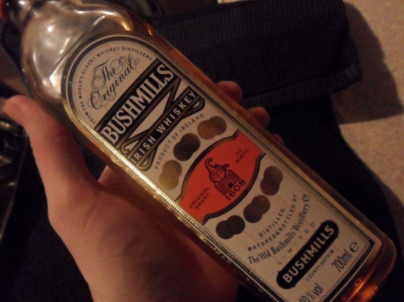
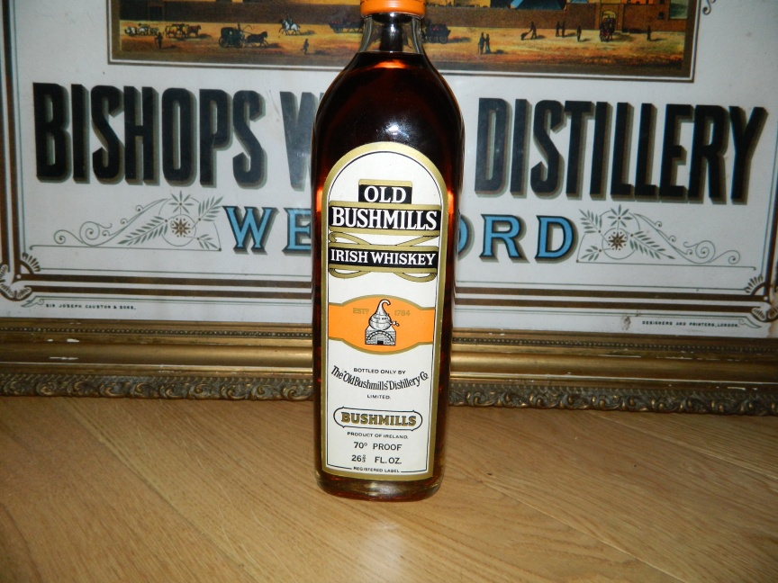

NOTE: This forum is no longer active. This is an archive copy of the forum as it was on 10 March 2018.
Old Bushmills Bottle
5 posts
• Page 1 of 1
Old Bushmills Bottle
 by dmcc » Mon Dec 03, 2012 1:42 pm
by dmcc » Mon Dec 03, 2012 1:42 pm
My Grandad who passed away in 1997 was always a fantastically generous old soul and 15 years after he left he's still spoiling me with presents. My Nan found this during the week and reckons its been sitting in a cabinet for the last two decades or so at least. Does anyone know if this is of any particular value. I don't think I'll be selling it but just wanted to know in case I shouldn't open it!
- Attachments
-
- 
- bushmills.jpg (132.71 KiB) Viewed 790 times
- dmcc
- New Spirit
- Posts: 5
- Joined: Thu Apr 28, 2011 12:04 am
Re: Old Bushmills Bottle
 by varizoltan » Mon Dec 03, 2012 4:25 pm
by varizoltan » Mon Dec 03, 2012 4:25 pm
the label says 1608,
IDL started that... in the late 80-s
it is not worth more than 20-25 euros
perhaps you may drink it, or compair it with the current offering, and see which one you like
i am sure you gonna notice some difference, and will enjoy it
IDL started that... in the late 80-s
it is not worth more than 20-25 euros
perhaps you may drink it, or compair it with the current offering, and see which one you like
i am sure you gonna notice some difference, and will enjoy it
Happiness is having a rare steak,a bottle of whiskey, and a dog to eat the rare steak!!!
-

varizoltan - Fully mature Cask
- Posts: 1023
- Joined: Fri Mar 20, 2009 11:03 pm
- Location: Hungary
Re: Old Bushmills Bottle
 by dmcc » Mon Dec 03, 2012 5:32 pm
by dmcc » Mon Dec 03, 2012 5:32 pm
Yeah I might do a comparison tasting and see.
Thanks for your response!
Thanks for your response!
- dmcc
- New Spirit
- Posts: 5
- Joined: Thu Apr 28, 2011 12:04 am
Re: Old Bushmills Bottle
 by Good Whiskey Hunting » Tue Dec 11, 2012 2:43 am
by Good Whiskey Hunting » Tue Dec 11, 2012 2:43 am
I found this one a while back and paid about €30 for it.
I only bought it to annoy my Diageo rep about their adopted heritage, even though Bushmills was owned by Irish distillers when they added the 176 years. Great talking point all the same. Like the deer head over the fireplace or the furry handcuffs on the toilet door!
I only bought it to annoy my Diageo rep about their adopted heritage, even though Bushmills was owned by Irish distillers when they added the 176 years. Great talking point all the same. Like the deer head over the fireplace or the furry handcuffs on the toilet door!
- Attachments
-
- 
- bush1784.JPG (225.5 KiB) Viewed 731 times
Four blessings upon you - Older whiskey - Younger women - Faster horses - More money
https://twitter.com/potstillwhiskey
https://facebook.com/potstillwhiskey/
https://www.instagram.com/potstillwhiskey/
https://twitter.com/potstillwhiskey
https://facebook.com/potstillwhiskey/
https://www.instagram.com/potstillwhiskey/
-

Good Whiskey Hunting - Fully mature Cask
- Posts: 1832
- Joined: Tue Dec 01, 2009 11:43 pm
- Location: Wexford
Re: Old Bushmills Bottle
 by Joel1802 » Tue Dec 11, 2012 7:19 am
by Joel1802 » Tue Dec 11, 2012 7:19 am
Love it, sh*t disturbing is a hoby of mine too!
- Joel1802
- Bourbon Barrel
- Posts: 361
- Joined: Wed Oct 10, 2012 3:05 am
- Location: British Columbia
5 posts
• Page 1 of 1